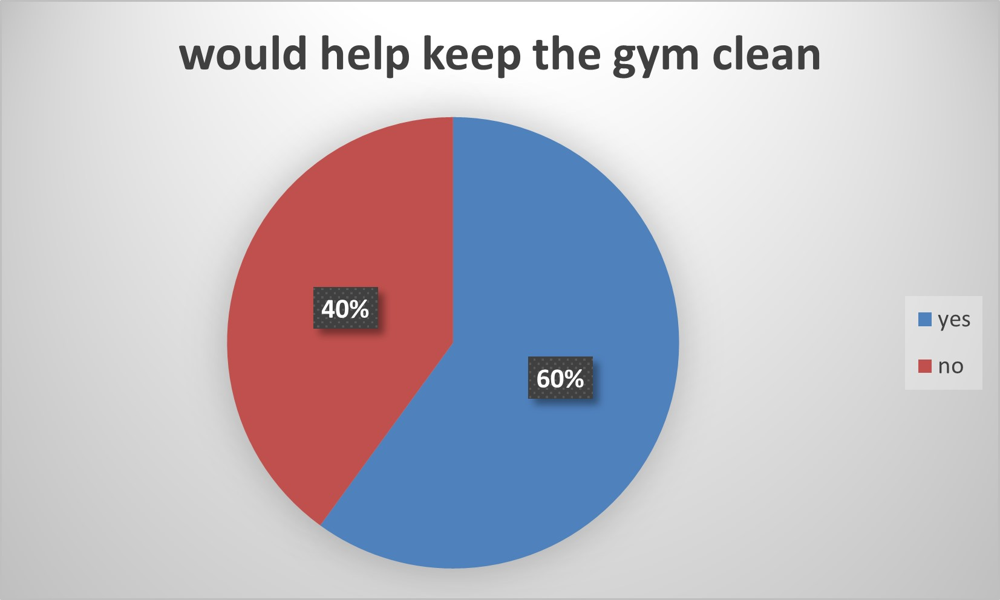
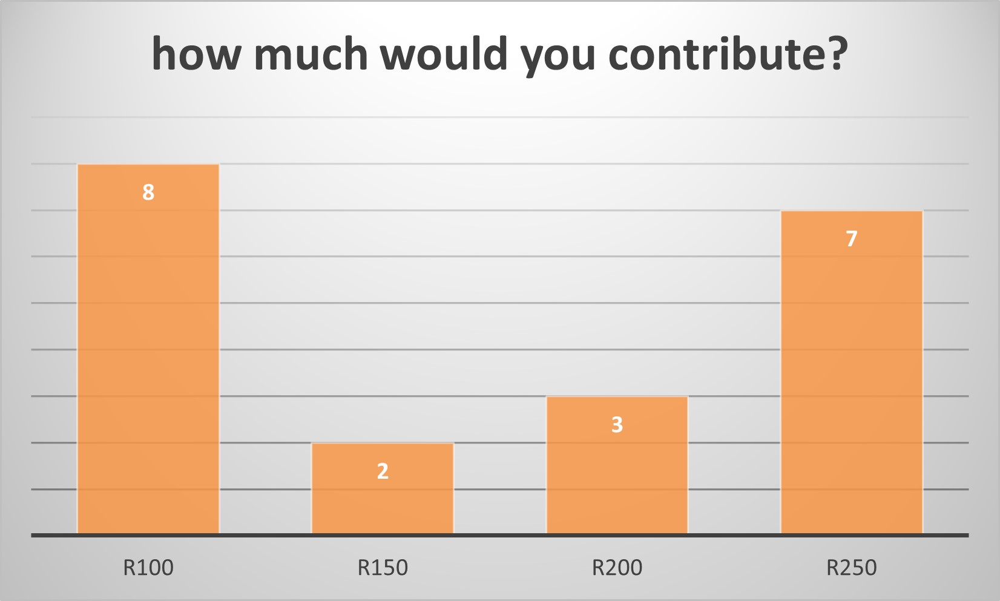

WHAT YOU NEED TO KNOW ABOUT THIS CROWDFUNDING PROJECT
A survey was sent out to the students asking them an array of questions. These questions varied from the actual gym and equipment to the details of crowdfunding itself.
The goal of this crowdfunding campaign is to raise R65000 for a school gym in 3 months. The donated money will be used for buying new state of the art equipment to ensure that students are exercising with good, safe equipment. These donations will also be used to maintain the gym ensuring that it stays clean and in optimal condition and will therefore last long.
The surveys were sent out with excitement and we were very pleased with the results.
The results showed us that most students and some staff would use the gym, and majority would help keep the gym in order.
Below is a graph showing the percentage of students who would help to keep the gym clean.

Another question asked was how much would you contribute towards the gym?
The graph below shows the reults.

Our Project Equipment and Approach
As part of our mission to create an inspiring and inclusive gym, we’ve carefully planned the equipment and resources needed to turn this vision into reality. Here’s what we’re focusing on and how we’re carrying out each phase of the project.
Equipment for Every Student's Needs
We believe that a well-equipped gym can make a big difference in student wellness and engagement. Here are some key pieces of equipment we’re aiming to include:
Strength and Conditioning Equipment: Including multi-functional weight machines, dumbbells, kettlebells, and resistance bands for developing strength, agility, and endurance.
Cardio Stations: Treadmills, stationary bikes, and elliptical machines will provide a range of cardio options to help students improve their cardiovascular health.
Sports Equipment: Updated basketball hoops, volleyball nets, and storage for gear like soccer balls, yoga mats, and more to support diverse athletic activities.
Accessible Equipment: Equipment that is wheelchair-friendly and designed for students with physical challenges, making our gym accessible to everyone.
Safety Enhancements: Padded flooring, proper lighting, and secure storage to create a safe environment where students can confidently focus on their health and fitness.
Our Project Approach: Step by Step
Assessment and Planning
We’ve started by assessing the current state of the gym and gathering feedback from students, teachers, and community members. We want to understand everyone’s needs and create a plan that maximizes space, safety, and functionality.
Fundraising and Crowdfunding
Through our crowdfunding campaign, we’re raising the necessary funds to acquire high-quality equipment and begin renovations. Every contribution brings us closer to reaching our goal, and every supporter is making a direct impact on our school’s future.
Design and Renovation
Once funding is secured, we’ll work with architects and designers to reimagine the gym’s layout. This phase includes updating the flooring, walls, lighting, and ventilation to ensure that the gym is fresh, safe, and modern.
Installation of Equipment
After the renovations, our new equipment will be installed by professionals. Each piece of equipment will be set up with student safety and ease of use in mind, and we’ll have thorough inspections to make sure it’s ready for regular use.
Ongoing Maintenance and Upgrades
Finally, we’re committed to maintaining the gym to ensure it remains in top condition for years to come. We’ll set aside funds for future maintenance and look to the community for continued support to keep the gym up-to-date and accessible.
This project is about more than just equipment; it’s about providing a high-quality space where students can thrive physically, mentally, and socially. Together, we’re building a gym that will benefit generations of students, creating a lasting legacy of health and wellness.